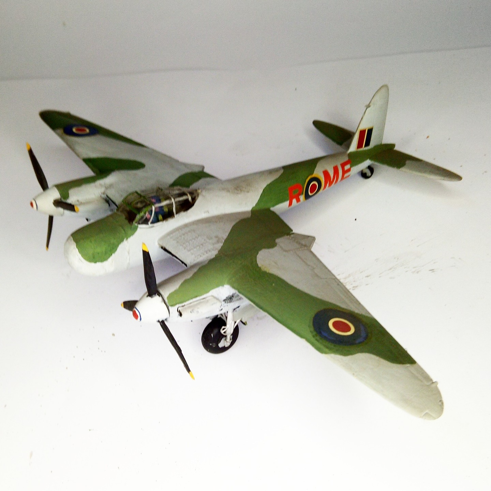

Aerei · scale model archive
DeHavilland Mosquito NF Mk XVII
DeHavilland Mosquito NF Mk XVII — Kit: conversion from Airfix kit, Scale: 1/72. Conversion of the Airfix kit by adding a new radome #1/72 #conversion

Photo gallery
English description
Conversion of the Airfix kit by adding a new radome
#1/72 #conversion
Descrizione italiana
Conversione del kit Airfix by adding una new radome.